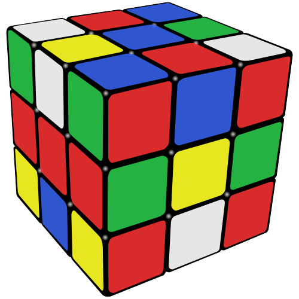
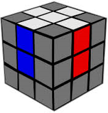
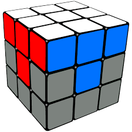
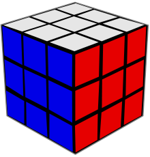

This site is going to teach you how to solve a Rubik's cube!
1. Scramble your Rubiks cube good. Do at least 30 turns. Make sure it's a good scramble, like so.
2. Get the white cross. When you get the cross. Make sure it's in it's correct position.
3. Get the corners of the white layer. Place the corners in the correct orientation and spot like so.
4. The middle layer. Look at the edge pieces on the bottom of the cube and find one without yellow. Put the color facing on the side to it's color. The bottom color should always be on the left or right. If it's the left than do this. D L D' L' D' F' D F. If the color is on the right side than do this. D' R' D R D F D' F'.
5. The bottom layer. Hold the cube upside down. If you have a yellow dot than do F R U R' U' F'. If you have a L shape then do it while one part is to the left and the other is opposite of you. If you have a line do it while it's horizontal. Now that you have a cross you need to put it in it's right positions. To switch 2 of them hold one facing you and one to the left and do this R U R' U R U2 R' U. When your cross is aligned we do the corners. You can have either 0, 1, or 4 corners correct that aren't in correct orientation. If you have 0 do this L' U R U' L U R'. If you have 1 make sure you do it when it's on the right. Now that you have all four corners place correctly we will have to orientate them. Hold it on the right and do this R' D' R D until the corner is correct. If the corner is correct and the rest on the other two layers is messed up it's ok unless you did it wrong. When you get the first corner orientated correctly then keep turning the bottom layers until you get to another corner that needs to be orientated then do the algorithim until that corner is correct and so on.
6. Now your Rubiks cube is solved! Now you can show your friends that you can solve a Rubiks cube! Time yourself and do various patterns with it!
